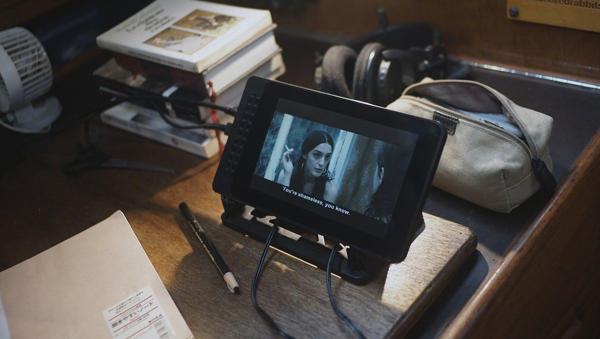

hardware
Computers are subject to water intrusion and saltwater corrosion, but with some care they can survive in a normal marine environment. We solved most of the problems by cleaning external connections often, and by storing them in a sealed box with some desiccants after each use. The main issue with computers on boats is that it is difficult to source parts when they break. To make matters worse, many modern machines have non-replaceable batteries, proprietary storage, and soldered-in RAM. The parts that fail the most are power connectors, external connections and batteries.
Leaving a port with spare parts is a good tactic, but leaving with backup PCs is even better. There are many good inexpensive computers on the market, like notebook processors (Pinebook, EeeBook) and single-board computers (Pine64). These computers run on lower voltage, which lower overall power consumption. By consuming less power, the system will be less expensive to run, but more importantly, it will run much longer on existing battery technology.
Carrying a spare battery isn't a great idea as you may not use it right away, and that its literal age also affects performance. Computers are rated for a limited number of cycles. If you drain the battery completely and recharge it every day, it'll be spent after 3 years. Keeping a laptop battery fully-charged is important as it draws a lot more power at half-charge, the last few percentage points are much lower wattage to float/top it off. Enabling the various power states in your computer settings can also reduce power consumption, which in turn spares your battery. If available, enable 'eco-mode' or 'low power mode'. We suffered battery failure on multiple laptops, read about it in tools ecosystem.
When parts fail on our boat we repair them, and we do the same for our PCs. Nowadays it is commonplace to trash a device when it stops working, contributing to the growing problem of e-waste in the world. Replacing broken components is important, as manufacturing a new PC makes a far bigger ecological footprint than manufacturing a new replacement part. If you must get a new PC, look for product longevity, including upgradability, repairability and modularity. In today's climate, making electronics last longer is crucial.